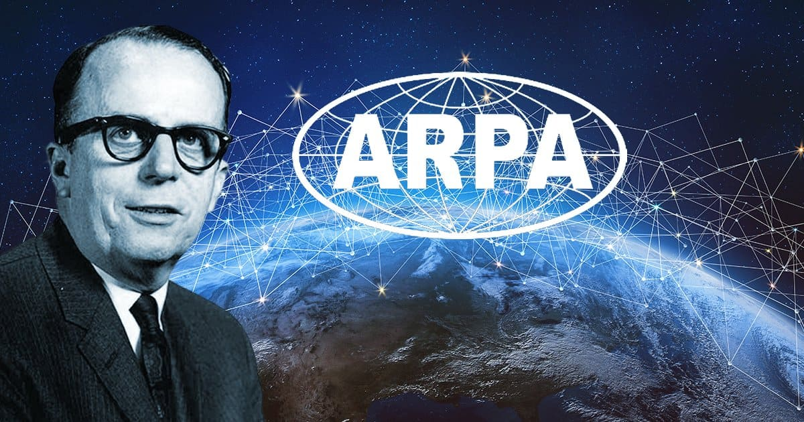

Felipe Bertolini - 1° ano de Informática IFRS Erechim!
É uma rede global de computadores interconectados que utiliza o protocolo TCP/IP como linguagem universal. Funciona através de uma vasta infraestrutura física, incluindo cabos submarinos e satélites, que permitem a troca de dados em tempo real.
É comum confundirem-se, mas a Internet é a "estrada digital" (a infraestrutura), enquanto a Web (WWW) é apenas um dos serviços que corre nela, sendo o conjunto de sites e páginas que navegamos.
Para que a comunicação funcione, cada dispositivo tem um Endereço IP único (como uma morada postal). O sistema DNS entra como um tradutor, convertendo nomes de domínios fáceis de ler para esses números técnicos.
A internet funciona como uma "rede de redes" que liga dispositivos através de uma infraestrutura de cabos e satélites. Para que tudo comunique sem erros, ela utiliza o protocolo TCP/IP (uma linguagem comum) e dois sistemas fundamentais: o IP, que identifica a "morada" de cada aparelho, e o DNS, que traduz os nomes dos sites (como google.com) para os números técnicos dessa morada. Assim, quando você pede um site, a rede sabe exatamente onde ele está guardado e envia a informação de volta para a sua tela.
A internet hoje é o motor da vida moderna. Ela conecta o mundo instantaneamente, democratiza o conhecimento e sustenta a economia global, sendo a ferramenta indispensável para o trabalho, a educação e a convivência em sociedade.

E o protagonismo no desenvolvimento da Internet, não fica somente com os homens, leia mais sobre, clicando no link abaixo:
© 2026 - Felipe Bertolini | IFRS Erechim
Projeto sobre a Internet - 1° ano de Informática
Cadastre-se para saber mais! Clicando aqui